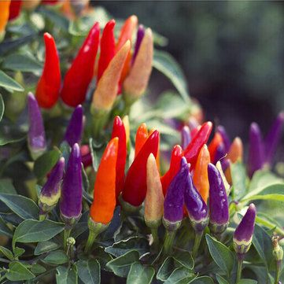

Indonesia merupakan negara yang sangat kaya akan beragam macam makanan, hampir setiap daerahnya memiliki sambal sebagai pelengkap
hidangan utamanya. Uniknya sambal meski terasa pedas di lidah, tapi warga negara Indonesia mayoritas menyukainya karena dianggap
meningkatkan selera makan atau menambah sensasi terhadap suatu hidangan. Umumnya rasa pedas pada sambal didapat dari bahan baku
utama pembuatannya yaitu CABAI. Yup cabai, Budidaya tanaman ini sangat mudah dan cepat menghasilkan buah hanya dalam 3 bulan
tanaman ini sudah bisa dipanen, ini membuat para petani sangat meminati dalam pembudidayaannya. Cabai pada umumnya identik dengan
warna merah, hijau, kuning, maupun perpaduan diantara warna tersebut, tapi bagaimana jika cabai dalam satu pohonnya saja memiliki
varian warna yang lebih beragam seperti pelangi. Wahh pasti terlihat menarik sekali bukan? Ya inilah yang pantas di nobatkan
terhadap cabai pelangi tersebut. Bolivian Rainbow Pepper
Holtikultur
Warna yang menarik pada tanaman ini, sehingga lebih dianggap sebagai tanaman hias. Cabai ini berukuran kecil, sekitar satu inci (2,5 cm)
dan berbentuk seperti kerucut, dan tumbuh tegak ke atas dengan tinggi rata rata 60 - 90 cm. Segi warna dari tanaman ini sangat dipengaruhi
oleh tingakat kematangannya mulai ungu dan menua menjadi kuning, lalu oranye, lalu bernuansa merah. Uniknya dalam satu pohon tanaman ini
dapat berisi lusinan cabai dengan tingkat kematangan berbeda-beda sekali berbuah, sehingga bila dilihat akan memanjakan kita dengan
tampilannya yang indah
Agrikultur
Penyinaran sepanjang hari oleh sinar matahari merupakan salah satu syarat agar tanaman cabai pelangi dapat tumbuh dengan baik. Cabai
ini dapat tumbuh di dalam ruangan dan akan menghasilkan buah terus menerus sepanjang tahun. Apabila tumbuh di luar, tanaman ini
membutuhkan iklim yang hangat. Cabai jenis ini tidak terlalu membutuhkan air, pasalnya kebutuhan akan air hanya terbatas pada
kapasitas sedang hingga cukup. sehingga, buah dapat tumbuh menjulang ke atas dengan sempurna.
Head To Head
Skala Scoville adalah ukuran tentang pedasnya cabai. Buah genus Capsicum (cabai) mengandung capsaicin, suatu bahan kimia yang
merangsang ujung saraf penerima pedas di lidah, dan jumlah satuan pedas Scoville (SHU) menunjukkan jumlah capsaicin yang ada.
Banyak sambal menggunakan peringkat Scoville mereka dalam iklan sebagai daya jualnya.
| Cabai Domba |
50.000 - 100.000 shu |
| Bolivian Rainbow Pepper |
5.000-30.000 shu |
| Cabai Rawit |
50.000-100.000 shu |
| Cabai Gendol/Habanero |
100.000 - 350.000 shu |
| Carolina Reaper |
1,500,000-2,200,000 shu |
Galery
